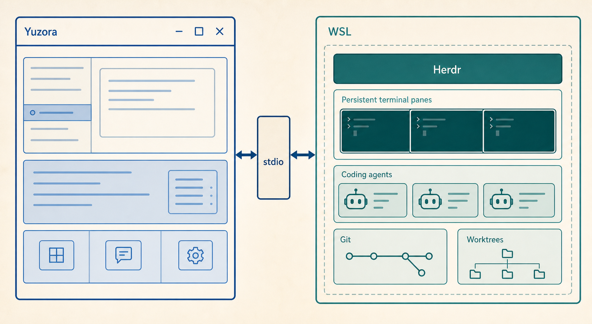
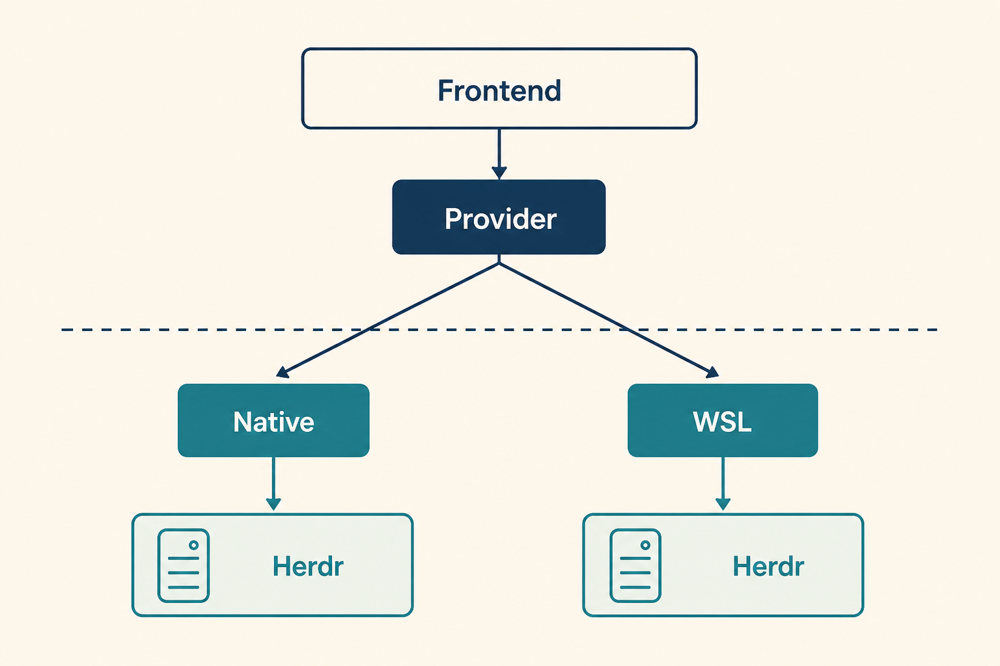
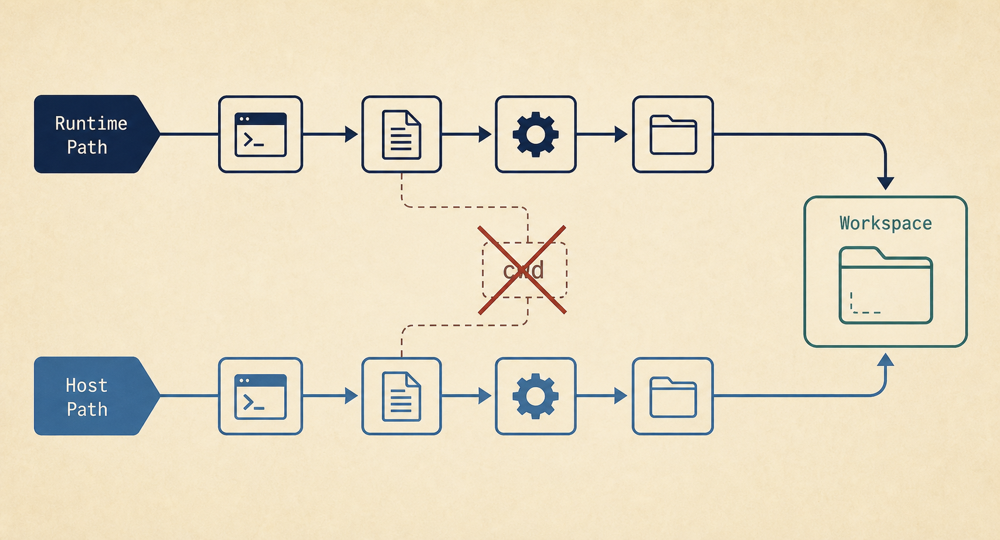

Windows WSL-native Herdr Provider 實作計畫
將 WSL 視為真正擁有 Herdr、PTY、Agent process tree、Git 與 worktree 的 Runtime Environment；Yuzora Windows 以 typed Provider transport 投影該 runtime。長期主要 transport 為通用 NDJSON stdio proxy，CLI bridge 僅作為 bootstrap 與 degraded fallback。

拍板決策
Runtime Environment + Named Session + resource ID 組成。wsl.exe shell 偽裝成完整 WSL runtime；不直接以 UNC 開啟 Unix socket；不在第一版自動安裝 Herdr、修改 distro 或背景啟動所有 distros。執行導覽
問題與現況
Yuzora 現行 Herdr 模型把 sessionName 當作全域 runtime key，Rust HerdrManager 同時負責 native binary selection、named-session discovery、local socket、capability probing、events 與 terminal connectors。這對單一 native runtime 正確，但無法表示 Ubuntu/default 與 Debian/default 是兩個不同 runtime。
src-tauri/src/herdr_service.rs固定從 host PATH／bundled resources 解出一支 Herdr binary，並直接連 Unix socket 或 Windows Named Pipe。src/state/herdrStore.ts的runtimesBySession、in-flight guards、attention keys 與 event ownership 只以 session name 隔離。src/lib/herdrPages.ts的 pseudo path 只有 session + terminal，跨 runtime 會碰撞。workspaceStore、TabBar、HerdrTerminalPage 與 hydration/reorder 邏輯都假設 session name 足以決定 runtime。- 現有 local PTY lane 已能偵測 WSL distros、解碼 UTF-16 清單並將 WSL UNC workspace 轉成
--distribution/--cd；此能力尚未進入 Herdr lane。
目標架構
typed RuntimeKey only
capability gate · request · event · connector
或
WSL stdio adapter

Adapter 策略
| Adapter | Primary transport | Fallback | Runtime owner |
|---|---|---|---|
| Native | 現有 Unix socket／Windows Named Pipe | 無變更 | Host-native Herdr |
| WSL | wsl.exe … herdr api proxy --stdio | CLI discovery/snapshot + polling；official terminal connector | 選定 distro 內 Herdr |
Native adapter 的 observable behavior 必須先由 characterization tests 固定，再移入 Provider seam。這次不是重寫 Herdr integration，而是讓既有行為成為第一個 adapter。
核心 interface 與 identity
#[derive(Clone, Eq, Hash, Serialize, Deserialize)]
#[serde(tag = "kind", rename_all = "camelCase")]
enum HerdrRuntimeTarget {
Native,
Wsl { distro: String },
}
struct HerdrRuntimeKey {
target: HerdrRuntimeTarget,
session_name: String,
}trait HerdrRuntimeProvider {
fn target(&self) -> &HerdrRuntimeTarget;
fn list_sessions(&self) -> Result<Vec<HerdrNamedSession>, String>;
fn capabilities(&self, session: Option<&str>) -> Result<HerdrCapabilities, String>;
fn request(&self, session: &str, request: HerdrApiRequest) -> Result<Value, String>;
fn subscribe(&self, session: &str, sink: EventSink) -> Result<Subscription, String>;
fn open_terminal(&self, request: TerminalOpenRequest) -> Result<Connector, String>;
}Interface discipline：外層仍保留 workspace_focus、tab_create 等 typed methods 與 schema gating；Provider 只隱藏「如何執行 Herdr 與如何交換 NDJSON」。Frontend 不得新增 raw method/params passthrough。
Frontend stable keys
type HerdrRuntimeTarget =
| { kind: "native" }
| { kind: "wsl"; distro: string }
type HerdrSessionRef = {
runtimeTarget: HerdrRuntimeTarget
sessionName: string
}
runtimeKey(target) // stable encoded key
sessionKey(target, sessionName) // maps/caches/events
pagePath(target, session, terminal) // pseudo-tab identity- 不可把
wsl:Ubuntu字串散落到 UI；只允許中央 key codec。 - 既有沒有 runtime target 的頁面與 persisted metadata 一律 migration 為
{kind:"native"}。 - Distro 名稱保留原文，可含空白／Unicode；所有 process launch 使用 argv，不進 shell program text。
雙路徑資料
interface HerdrWorkspaceLocation {
runtimePath: string | null // /home/yuuzu/project
hostPath: string | null // \\wsl.localhost\Ubuntu\home\yuuzu\project
displayPath: string | null // presentation only
}Path conversion 由選定 distro 內的 wslpath 或明確 UNC parser 完成；custom mounts 不以 /mnt/c 猜測。Workspace activation 以 Host Path 通過 Yuzora unsaved/trust/open-workspace flow；Herdr mutation 仍使用 Runtime Path。

最終能力矩陣
| 能力 | WSL stdio proxy | WSL CLI fallback | 完成條件 |
|---|---|---|---|
| Session discovery/status/schema | 完整 | 完整 | 不啟動未選擇的 distro；selected binary 為權威 |
| Snapshot/Spaces/Agents | 完整 | 輪詢 | 相同 IDs 跨 distro 不碰撞 |
| Workspace/Tab/Pane mutations | 完整 | 誠實降級 | schema-gated；無 proxy 時不可假裝支援 |
| events.subscribe | 完整 | 不可用 | events 與 responses 可在同一 stdout 安全分流 |
| Terminal observe/control | 完整 | 完整 | 既有 official connector 經 wsl.exe 啟動 |
| Agent lifecycle/integrations | WSL-native | WSL-native | Herdr 在 distro 內看得到 Linux process tree |
| Git/worktree | WSL-native | read-only 可先行 | Runtime Path 不送進 Windows Git |
| Reconnect/recovery | 完整 | 重啟 CLI | generation isolation，舊 response/event 不污染新連線 |
Relevant Files
Existing Files
- existing
src-tauri/src/herdr_service.rs— 保留 typed facade、schema gating、DTO parsing、connector ownership；逐步把 execution/transport 細節移到 Provider adapters。 - existing
src-tauri/src/herdr_transport.rs— 成為 Native adapter 的 local-socket transport，不承擔 WSL path 或 process launch。 - existing
src-tauri/src/pty_service.rs— 重用 WSL distro list decoding、UNC parsing 的測試契約；避免 copy-paste divergent behavior。 - existing
src-tauri/src/process_kill.rs— wsl/proxy/connector child hidden launch、Windows Job containment、bounded termination。 - existing
src-tauri/src/lib.rs— 註冊新增 runtime settings/discovery commands，維持 shutdown 只 release Yuzora-owned children。 - existing
src/lib/herdrTypes.ts/src/lib/herdrIpc.ts— typed RuntimeTarget、SessionRef 與所有 IPC payload 增加 target。 - existing
src/state/herdrStore.ts— session-only maps 全面遷移為 runtime-scoped keys；poll/event/attention/activation queues 同步 namespace。 - existing
src/lib/herdrPages.ts— pseudo path v2 與 legacy native migration。 - existing
src/state/workspaceStore.ts/src/lib/workbenchTabReorder.ts— page metadata、dedupe、hydrate、reorder 以 RuntimeTarget + session + tab ID 判定。 - existing
src/workbench/HerdrBridge.tsx— selected Runtime Session 的 events/polling owner，generation key 改為 composite key。 - existing
src/app/panels/HerdrTerminalPage.tsx/src/terminal/terminalTransport.ts— connector open/takeover/release 傳入 RuntimeTarget。 - existing
src/app/workbench/HerdrSettingsSection.tsx— Binary Source 與 Runtime Environment 分開顯示；WSL distro 是 live-select provider，不是假裝成 binary source。 - existing
src/lib/paths.ts/src/lib/workspaceActions.ts— Host Path、Display Path 與 workspace activation。 - existing
src/lib/i18n/locales/{en,zh-TW}/workbench.json— runtime、distro、proxy、fallback 與安裝診斷文案。
New Files
- new
src-tauri/src/herdr_runtime/mod.rs— RuntimeTarget、RuntimeKey、Provider interface 與 registry。 - new
src-tauri/src/herdr_runtime/native.rs— 現有 host binary/local socket 行為的 adapter。 - new
src-tauri/src/herdr_runtime/wsl.rs— distro discovery、argv-safe command builder、Herdr probe、CLI fallback 與 path conversion。 - new
src-tauri/src/herdr_runtime/stdio_proxy.rs— 長連線 child、request correlation、event fanout、generation/reconnect、bounded stderr。 - new
src/lib/herdrRuntime.ts— RuntimeTarget codecs、stable keys、labels、legacy migration helpers。 - new
.yuuzu/eval/windows-wsl-herdr-provider.html— Windows/WSL evidence matrix，實作時建立並累積驗收證據。
Implementation Phases
執行規則：依序執行；每個 phase 完成前，Native Herdr regression 與該 phase 新增契約都必須通過。狀態：[] idle · [wip] in progress · [x] complete · [f] failed。
[x] Phase 0：決策、版本基線與 characterization
先固定現有 Native adapter 的 observable behavior，避免建立 Provider seam 時無意改變 session routing、capability gating、connector ownership 或 page lifecycle。
0.1 Contract baseline
[x]已建立本地 implementation-issue body 與 ADR/domain glossary back references：specs/windows-wsl-native-herdr-implementation-issue.md；GitHub publication 為外部未授權事項。[x]已建立 Native behavior matrix：specs/windows-wsl-native-herdr-provider-baseline.html，涵蓋 global/default binary、named sessions、socket ping、schema drift、stopped sessions、events、terminal connector 與 shutdown。[x]已以 selected binary 的status --json／api schema --jsoncharacterization tests 固定 protocol authority；不從 upstream master protocol 推論。[x]為現有 page path、session maps、attention keys、event ownership 與 attachment keys 補 collision characterization tests。
0.2 Testing Strategy
[x]cd src-tauri && cargo test --locked --lib herdr_ -- --test-threads=1— Native Herdr baseline。[x]bun run test src/state/herdrStore.test.ts src/lib/herdrPages.test.ts src/lib/workbenchTabReorder.test.ts src/app/panels/HerdrTerminalPage.test.tsx src/workbench/TabBar.test.tsx— session/page/connector baseline。
[x] Phase 1：Runtime identity migration 與 Provider seam
先讓 Native Herdr 經由新 seam 運作；此 phase 不加入 WSL execution，目標是把 session-only identity 改成 runtime-scoped identity 且 UI 無行為變化。
1.1 Rust provider facade
[x]新增HerdrRuntimeTarget、HerdrRuntimeKey、Provider interface 與 registry；目前只註冊 Native adapter。[x]binary selection、configured/resolved diagnostics、preference persistence、PATH→managed fallback 與 restart-required lifecycle 已移入 Native adapter；typed facade 僅委派並保留 DTO/schema gate。[x]Native adapter 已擁有 session list、capability/snapshot request、event subscription/release 與 terminal connector opening/control/release；typed facade 保留 DTO/schema gate。[x]connector、native event subscription、WSL proxy subscription 與 long-lived proxy generation registry 以 RuntimeKey ownership namespace，且 opaque IDs 維持 public control handles。[x]所有 Tauri commands 新增 optionalruntimeTarget；省略時視為 Native，保留舊 caller compatibility。
1.2 Frontend identity migration
[x]新增中央runtimeKey/sessionKeyhelpers；禁止直接 template-string runtime keys。[x]runtimesBySession、selected Space、in-flight maps、activation queues、attention、events health 改以 composite session key。[x]Page metadata 加入herdrRuntimeTarget；page path v2 包含 target，legacy v1 decode 為 Native 並在 snapshot reconcile 時升級 metadata。[x]hydrate/reorder/close/context menus/terminal target links 全部以 runtime + session 判定，不讓跨 runtime 相同 tab ID dedupe。
1.3 Testing Strategy
[x]Native existing tests 全部維持通過，且 IPC omit-target compatibility 有 Rust/TS tests。[x]新增 Ubuntu/default 與 Native/default 同時存在的 store/page/attention/attachment collision tests。[x]bun run typecheck— 所有 Herdr action 呼叫點都顯式攜帶或安全 default RuntimeTarget。
[wip] Phase 2：WSL discovery、CLI bootstrap 與雙路徑
建立無 upstream 依賴的 read-only/terminal-capable WSL Provider，證明 distro 內 Herdr 可被發現、驗證、snapshot 與連接。
2.1 Distro discovery policy
[x]Windows 只用wsl.exe --list --quiet列出 distro，不啟動它們；重用 UTF-16LE/UTF-8 decoder，拒絕 empty/duplicate output，且有 host-runnable fake executor coverage。[x]只在使用者明確選擇或開啟既有 WSL page 時 probe 該 distro；背景 refresh 不遍歷啟動所有 distros，fake plan 斷言 list 不啟動 distro。[x]所有 WSL command 使用Command::new(wsl.exe).args(...)；distro、session、path 不進 cmd/bash 字串，fake executor 斷言完整 argv/env。[x]hidden process + Windows Job + bounded stdout/stderr + stage-specific timeout；failure classes 區分 WSL/distro/Herdr/session/protocol，host fake harness 覆蓋 bounded plans、timeout/owned-tree error。
2.2 CLI bootstrap
[x]在 selected distro 內執行 Herdr session list、status、schema、snapshot；使用env HERDR_SESSION=… herdr …argv，而非 host environment 假設。[x]CLI fallback capability 誠實標示：snapshot/terminal 可用；events 不可用；未實作的 mutations 不可宣告 available。[x]將 CLI snapshot 經既有 bounded JSON/complexity/count parsers，不新增 WSL 專屬寬鬆 parser。
2.3 Path mapping
[x]從 snapshot 的 Runtime Path 取得 Windows Host Path；優先使用 selected distro 的wslpath -w，必要時正規化為\\wsl.localhost\distro\…，並由 fake executor 驗證 custom mount/response bounds。[x]Host Path → Runtime Path 使用wslpath -u；UNC distro 必須與 RuntimeTarget distro 一致，跨 distro path fail closed。[x]Workspace DTO 同時保留 runtimePath/hostPath/displayPath；既有space.path遷移時明確指定它的語意，不做 silent dual-use。[x]custom mounts、空白、Unicode、UNC/verbatim path、distro 名稱大小寫與不存在 path 有 pure/fake command fixtures。
2.4 Testing Strategy
[x]Rust pure/fake tests：UTF-16/UTF-8 distro list、argv shape、timeout class、path mapping response、cross-distro rejection、snapshot conversion bounds。[x]可重用 fakewsl.exeexecutor 記錄 argv/env、回傳 bounded Herdr JSON、模擬 missing binary/timeout/invalid UTF-8；不依賴 Windows host。[]Windows manual gate：選擇 Ubuntu 後才啟動 distro，顯示正確 Herdr version/protocol/session/snapshot。
[wip] Phase 3：WSL Terminal Session connector 與 page lifecycle
透過既有 Herdr official connector，在 WSL-native runtime 中提供 observe/control、takeover、input、resize、scroll、release。
3.1 Connector launch
[x]WSL adapter 產生wsl.exe --distribution D --exec env HERDR_SESSION=S herdr terminal session control|observe …argv，具 exact-plan test。[x]沿用現有 frame tracker、first-full/contiguous sequence、bounded stderr、control NDJSON 與 xterm write path，host fake connector 覆蓋 frame/stderr/exit。[x]Connector registry key 加 RuntimeKey；相同 terminal ID 跨 distro 可同時開啟，host fake connector test 驗證 isolation。[x]proxy/connector child 終止只關閉 Yuzora-owned Windows process tree；不得呼叫wsl --shutdown、Herdr server stop 或 pane close，fake owned-child lifecycle test 驗證 release。
3.2 Page/activation integration
[x]HerdrTerminalPage、leaf attachments、take-control 與 layout requests 傳入 RuntimeTarget。[x]WSL Space activation 先以 Host Path 執行 unsaved/trust/workspace switch，再向 WSL Herdr focus Runtime Path 所屬 workspace/tab，Vitest 有雙路徑 assertion。[x]開啟 WSL page 不切走另一 runtime 的 selected pages；EditorGroup placement/cache 與 existing connector 保持。[x]WSL 中斷時 page 保持 mounted，顯示 disconnected/reconnect；不得刪除 local page 或自動 close Herdr tab。
3.3 Testing Strategy
[x]Host-runnable fake WSL connector tests 覆蓋 frame、input、resize、scroll、takeover、stderr、exit、release、late open。[x]Vitest 覆蓋 Native/Ubuntu 同 terminal ID 的 attachment isolation、page v2 paths、disconnected retention，並驗證 Host Path workspace activation 與 Runtime Path Herdr focus。[]Windows manual gate：在 Yuzora xterm 中控制 WSL Herdr pane，關閉 Yuzora 後 WSL Herdr pane/server 持續存在。
[wip] Phase 4：Herdr upstream 通用 NDJSON stdio proxy
在 Herdr upstream 建立非 WSL-specific 的 transport bridge，使任何只能啟動遠端 process 的 client 都能代理 public socket API。
4.1 Proxy wire contract
[x]已在specs/herdr-upstream-api-proxy.patch實作命令herdr api proxy --stdio；session 由 explicit option 或HERDR_SESSION選擇，連接現有 public API socket。[x]Patch 的 stdin 接收 bounded NDJSON；stdout 只輸出 responses/events；stderr 只輸出 diagnostics，永不混入 protocol。[x]Patch 保留 request IDs、error bodies、subscription event ordering 與 protocol/schema 語意，不創造第二套 RPC。[x]Patch 對 stdin/socket EOF、malformed/oversized line、server restart 設定 deterministic exit/error；proxy 不停止 server。[x]Patch 沿用 public API permission/security 與 bounded framing；不接受任意 socket path。
4.2 Upstream verification
[]外部 toolchain gate：在 upstream 支援的 Linux/macOS/Windows toolchain 執行 Patch 的 unit/integration tests（ping、snapshot、mutation、events.subscribe、concurrent IDs、slow reader/backpressure、server disconnect）。此 host 的 vendored Ghostty SDK linker 阻擋 Cargo。[]外部 cross-platform gate：Linux、macOS、native Windows build 維持，並證明 stdio proxy 可在 native host 使用。[x]Patch 文件已明確區分 proxy process lifecycle 與 Herdr server/pane lifecycle。
[wip] Phase 5：Yuzora StdioProxy transport、events 與 full control plane
將 WSL adapter 從 CLI bootstrap 提升為長連線 primary transport，並保留 CLI fallback。
5.1 Long-lived process module
[x]每個 RuntimeKey 至多一個 active proxy generation；writer serialized，reader 依 request ID resolve pending calls，subscription events fanout。[x]request deadline、pending count、line bytes、stderr bytes、JSON complexity 與 event queue 都有 hard ceilings。[x]EOF/parse error 一次性 fail 所有 pending requests，emit disconnected，清掉 capability cache；舊 generation 的 late response/event 全部拒絕。[x]reconnect 先重新 probe version/protocol/schema、再 snapshot、再 events；identity drift 不沿用舊 cache。
5.2 Facade parity
[x]既有 typed workspace/tab/pane/layout/agent/worktree methods 透過 Provider request，Native 與 WSL 共用 parsers與 capability flags。[x]WSL events.subscribe 接進既有 HerdrBridge/store flow；healthy events 仍保留低頻 authoritative snapshot fallback。[x]proxy unavailable 時自動降級 CLI snapshot/polling + terminal connector，並在 capabilities/diagnostics 顯示 degraded reason。[x]Mutation 在 degraded mode 只有經明確支援的 CLI command 可開啟；其餘按鈕 disabled，不做 optimistic fake。
5.3 Testing Strategy
[x]Fake stdio proxy：out-of-order responses、events interleave、duplicate IDs、oversize、malformed JSON、EOF、stderr flood、write backpressure。[x]Store/Bridge：proxy generation race、event owner switch、snapshot fallback、multi-distro concurrent pages、reconnect resnapshot。[]Real WSL：workspace/tab/pane create/focus/rename/split/move/close、layout ratio、agent get/read、worktree list。
[x] Phase 6：Settings、UX、持久化與多 distro
讓 Runtime Environment 成為可理解、可診斷、可選擇的產品概念，但不把 WSL 與 Native binary source 混成一個設定。
6.1 Settings UX
[x]Herdr Settings 分為 Runtime Environments 與 Native Binary Source；Native global/default 行為不變。[x]顯示可用 WSL distros；使用者可 enable/select，一次只 probe selected target；顯示 distro、Herdr path/version/protocol、proxy/fallback mode、reason。[x]Herdr 未安裝時提供 distro 內安裝指引與 copy command；第一版不自動下載、sudo 或修改 shell config。[x]Session/Space/Agent UI 顯示 Runtime Environment label，避免兩個 default session 無法辨識。
6.2 Persistence/migration
[x]Persist enabled/last-selected RuntimeTarget；只列 distro 不啟動，選擇/開頁才 connect。[x]Legacy Herdr pages/settings/session metadata migration 為 Native；migration idempotent，原 page placement 不變。[x]若 persisted WSL distro 不存在，保留 page metadata與 readable diagnostic，不 silently fallback 到 Native。[x]en/zh-TW 文案覆蓋 runtime、distro、not installed、proxy unavailable、CLI fallback、reconnect、path conversion failure。
6.3 Testing Strategy
[x]Settings tests：不 probe 未選 distro、selected probe、missing Herdr、proxy fallback、native binary controls unchanged。[x]Migration tests：v1 native pages、missing distro、same session names、Unicode distro、restored inactive pages。[x]Accessibility：Runtime selector、diagnostics、disabled mutation reasons、screen-reader labels 與 keyboard flow。
[wip] Phase 7：Windows/WSL hardening、performance 與 release gate
以真實 Windows + WSL2 packaged build 證明 process、path、events、recovery 與 shutdown semantics。
7.1 Failure matrix
[x]Host fake harness 已模擬 WSL executable/distro 缺失或 unregister、Herdr missing、session stopped、protocol drift，並驗證 fail-closed diagnostics。[x]Host fake harness 已模擬 proxy crash/EOF、connector exit、app shutdown 與 restart generation；只釋放 Yuzora-owned children/pending requests。[x]Host fake harness 已驗證多 distro 同名 IDs、Unicode/空白 distro、custom mount 與 UNC cross-distro/unavailable fail-closed。[x]Host fake harness 已驗證 slow listener/event storm、large NDJSON/snapshot、agent text/frame limits與 rapid runtime reconnect guards。[]Windows manual gate：在真實 WSL2 驗證wsl --terminate、server/connector crash、sleep/resume、distro unregister 與同名 multi-distro recovery。
7.2 Performance budgets
[x]Host diagnostics 已記錄 bounded cold start、warm proxy request、event dispatch、terminal frame dispatch simulation與 owned child count；CLI fallback 與 proxy mode 分開。[x]Host fake harness 已保證 listing 不啟動 distro、同 RuntimeKey concurrent proxy creation 至多一 child，snapshot path enrichment 上限 64。[x]Host Bridge test 已驗證 repeated disconnect 僅產生一個 reconnect generation，最多一個 event-driven recovery snapshot race。[]Windows performance gate：在 packaged app 量測 selected cold probe、warm proxy、snapshot、event-to-UI、terminal frame 與 process-count budgets。
7.3 Release validation
[]Windows packaged gate：完整 WSL Spaces/Agents/Terminal/control-plane smoke，收集 screenshot/log/process evidence。[]Windows packaged gate：關閉 Yuzora 後 Herdr server/panes 仍存活，Yuzora proxy/connector children全部退出。[x]此 host 的 Native frontend/Rust full suite/build、touched-file lint、exact clippy baseline 與 release-only shutdown simulation 已通過；Windows native regression仍屬 packaged gate。
Validation Commands
[x]bun run lintexit 0（45 個既有且未觸及的 warnings、0 errors）；所有 touched Herdr/runtime/UI files 的 targeted ESLint 為 zero warnings。[x]bun run typecheck— RuntimeTarget/SessionRef migration完整。[x]bun run test— full Vitest suite。[x]bun run build— production frontend build。[x]cd src-tauri && cargo fmt --package yuzora -- --check— Rust formatting。[x]cd src-tauri && cargo check --locked --all-targets— all Rust targets compile。[x]cd src-tauri && cargo test --locked— full Rust suite。[x]ruby .github/scripts/verify-clippy-baseline.rb .github/clippy-baseline.json— exact warning baseline。[x]git diff --check— patch whitespace integrity。[x]git diff --cached --name-only— 必須為空，除非使用者在當次對話明確授權 staging。
Questionables
Herdr upstream 若暫時不接受 api proxy --stdio，Yuzora 是否仍可發布？
可以發布 experimental read/terminal beta：CLI discovery/status/schema/snapshot + snapshot polling + official terminal connector。Full mutation/events capability 必須 disabled 並顯示 degraded reason；不可在 Yuzora 內重作 Herdr private protocol。
選擇 WSL distro 是否允許啟動該 distro？
建議：列舉不啟動；使用者明確選擇 Runtime Environment、開啟 persisted WSL page 或按 Connect 時，視為啟動 selected distro 的意圖。背景 refresh 不得 probe 未選 distros。
第一版是否由 Yuzora managed-install Herdr 到 WSL？
否。先驗證 external installed Herdr，提供明確安裝指引與 diagnostics。Managed install 會涉及 distro filesystem、更新 ownership、arch/channel、sudo 與 supply-chain policy，應另立決策與計畫。
WSL1 是否列入正式支援？
第一版以 WSL2 為驗收基線；Provider interface 不故意阻擋 WSL1，但未經 PTY/process/session persistence 驗證前只標示 unverified，不承諾 supported。
Notes：時程、風險、回滾與後續
建議時程
Top risks
Rollback strategy
- RuntimeTarget DTO 與 legacy Native default 保留，使 WSL feature flag 關閉時 Native behavior 不變。
- WSL adapter 可整體 disable，不刪除或改寫 WSL Herdr sessions/pages；既有 WSL pages顯示 unavailable。
- Proxy regression 時降級 CLI snapshot/polling + terminal connector；mutation buttons依 capabilities停用。
- 不允許 WSL failure fallback 到 Native session，避免在錯誤 runtime 執行 destructive action。
Out of scope / future
- Managed Herdr install/update inside WSL。
- SSH、Dev Container、Docker/Podman Provider；stdio proxy與RuntimeTarget seam會保留延伸空間，但本計畫不實作。
- 跨 Runtime Environment 移動 live pane/session。
- 自動啟動所有 persisted distros、background health polling every distro。
- WSL distro lifecycle管理、
wsl --shutdown或 unregister。